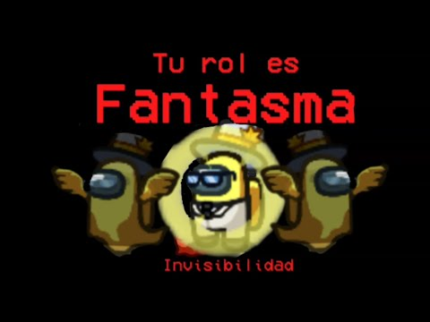

1. Anomalía Cuántica y Camuflaje Óptico
Presentado en las expansiones avanzadas de roles de Among Us de 2024, el Fantasma (o Phantom en su designación internacional) representa la evolución extrema de las técnicas de infiltración y sigilo del parásito espacial. Mientras que las demás cepas biológicas dependen de la manipulación social o la violencia física directa dentro de los límites de la visibilidad humana, el Fantasma altera su índice de refracción electromagnética gracias a un exoesqueleto celular translúcido que desvía la luz visible y los sensores térmicos estándar instalados en las compuertas de la nave.
Esta capacidad de desvanecimiento le permite volverse literalmente invisible ante la retina de cualquier tripulante vivo durante un lapso programable. Sin embargo, este proceso no carece de perturbaciones físicas: en el instante preciso de activar el manto de invisibilidad, el organismo del Fantasma libera una nube densa y efímera de humo violáceo con micropartículas de vapor condensado, la cual flota en el aire durante una fracción de segundo antes de disiparse.
Por ende, la destreza del jugador que encarna al Fantasma radica en saber cuándo y dónde activar el desvanecimiento para evitar que esa estela de humo sea presenciada por un tripulante que doble la esquina del corredor. Una vez camuflado, el Fantasma se transforma en el depredador más aterrador del cosmos: puede acechar a escasos centímetros de su objetivo sin ser detectado, esperar el momento en que la víctima quede aislada y perpetrar el golpe fatal antes de replegarse como una exhalación en la nada.
2. Arquitectura de Mecánicas y Balance Dinámico
La invisibilidad del Fantasma está rigurosamente regulada por leyes biofísicas que evitan la impunidad absoluta y generan un intenso juego de gato y ratón:
2.1. Desvanecimiento Cuántico Activo [Invisibilidad Total]
Activa la refracción fotónica volviendo al asesino cien por ciento invisible para los ojos de todos los tripulantes vivos y las cámaras de vigilancia en circuito cerrado (Duración de Invisibilidad: 5 a 15 Segundos). Esta ventana otorga libertad total de movimiento para infiltrarse en salas vigiladas o eludir persecuciones de grupos numerosos.
2.2. Estela de Humo Espectral Residual [Indicio Delator]
Libera una ráfaga característica de vapor morado que marca las coordenadas espaciales exactas donde el Fantasma entró en su estado de camuflaje (Persistencia Visual: 0.8 a 1.5 Segundos). Este residuo actúa como alerta temprana para los supervivientes atentos, permitiéndoles deducir la presencia inmediata de la amenaza invisible.
2.3. Enfriamiento de Camuflaje [Recarga Cuántica]
Representa el lapso temporal requerido para estabilizar la resonancia de las micropartículas antes de poder iniciar un nuevo ciclo de invisibilidad (Tiempo de Recarga: 20 a 45 Segundos). Durante este intervalo, el Fantasma queda corpóreo y plenamente vulnerable al escrutinio ocular de los investigadores.
2.4. Ruptura por Interacción Ofensiva [Penalización Táctica]
Al ejecutar un asesinato o interactuar con un conducto de ventilación, el manto de invisibilidad colapsa instantáneamente, revelando al atacante en su forma real. Esta condición prohíbe los asesinatos con camuflaje persistente y exige calcular una vía de escape inmediata tras el impacto mortal.
3. Maniobras Tácticas: El Arte de la Caza Silente
Dominar al Fantasma exige frialdad analítica y una comprensión milimétrica de las líneas de visión de los mapas de Among Us:
3.1. El Asalto Fantasma en Puntos Ciegos
El error más común de los novatos es hacerse invisible justo delante de su presa. El jugador profesional activa el desvanecimiento dos habitaciones antes de llegar al objetivo (por ejemplo, en Motores Inferiores antes de entrar a Reactor). Al ingresar flotando en invisibilidad, puede situarse a la espalda de la víctima que se encuentra concentrada resolviendo los paneles numéricos, ejecutar el asesinato y escapar por el corredor antes de que los tripulantes cercanos escuchen la alarma.
3.2. La Falsa Desaparición y el Doble Giro
Si un tripulante te persigue porque sospecha de ti, dobla una esquina hacia una sala con ventilación (como Oxígeno o Navegación). Activa la nube de humo y, en lugar de saltar al ducto como esperaría el perseguidor, camina invisible en dirección contraria pasando por su lado mientras él examina frenéticamente las rejillas. Cuando ingrese a la sala buscando un ducto abierto, te encontrarás en el vestíbulo principal mezclándote con tres inocentes con una coartada perfecta.
3.3. Coordinación con Sabotajes Mayores
Sincroniza tu invisibilidad con el sabotaje de Luces o Reactor. En medio del apagón, cuando la visibilidad de los tripulantes se reduce a un círculo diminuto alrededor de sus cascos, el Fantasma invisible puede deslizarse a través de la masa aglomerada, eliminar a una figura clave como el Detective o el Juez y desvanecerse en la penumbra sin que ninguno de los apiñados comprenda qué sucedió.
4. Protocolos de Caza y Detección para la Tripulación
Aunque el Fantasma no puede ser visto con la vista ordinaria, deja una serie de perturbaciones físicas que la tripulación entrenada puede capitalizar:
- Detección de Colisiones Físicas: El Fantasma es invisible, pero no intangible. Su masa corpórea sigue colisionando con los demás jugadores. Si un tripulante intenta avanzar por un pasillo estrecho y siente una resistencia repentina en el vacío como si chocara con una pared invisible, está cara a cara con el Fantasma y debe retroceder de inmediato hacia un botón de emergencia.
- Vigilancia de la Puerta Automática: Las compuertas presurizadas de la nave responden a sensores de proximidad biomecánicos. Si una puerta se abre sola en un corredor sin que ningún tripulante visible la cruce, el Fantasma acaba de ingresar a esa sección de la nave.
- Rastreo con el Localizador (Tracker): Si el Localizador implantó su baliza telemétrica en un jugador que resulta ser el Fantasma, el icono de pulso en el minimapa seguirá moviéndose en tiempo real aunque el cuerpo del impostor sea invisible en la pantalla principal.
- Avistamiento del Humo Revelador: Capacita a tus aliados para memorizar la silueta de la bocanada de vapor morado. Si ves brotar ese humo en la entrada de Armería, alerta de inmediato a la mesa redonda indicando la última coordenada del asesino.
5. Perfil Operativo y Parámetros Técnicos
Desde la perspectiva de diseño lúdico y balance de juego estandarizado, este personaje se caracteriza por los siguientes parámetros oficiales normados:
- Facción Asignada: Impostores (agente parasitario de sigilo extremo).
- Especialidad Táctica: Infiltración invisible, evasión de cuadrantes y asaltos quirúrgicos.
- Poder Central: Desvanecimiento óptico y refracción electromagnética completa.
- Duración del Sigilo: 5 a 15 Segundos continuos según calibración de sala.
- Indicio Visual Primario: Nube de vapor morado en las coordenadas de activación.
- Vulnerabilidad Física Crítica: Colisión corpórea tangible contra otros tripulantes al caminar.
- Nivel de Dificultad: Muy Alta (requiere dominio de líneas de visión, esquinas y lectura de compuertas).
6. Recursos Multimedia Obligatorios: Sonido y Vídeo
Zumbido Cuántico de Desvanecimiento
Frecuencia acústica resonante emitida cuando el Fantasma entra en estado de invisibilidad refractiva.
Secuencia Operativa de El Fantasma
Material cinemático documentando la maniobra de camuflaje, aproximación sigilosa y ruptura de invisibilidad.
7. Archivos Gráficos y Evidencias Visuales
